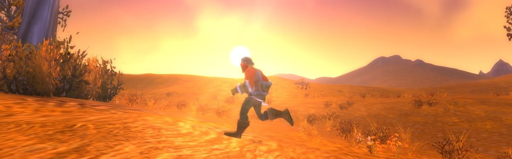

September 2019 Game of the Month: WoW Classic
Posted September 26, 2019

I've tried playing retail World of Warcraft in the past. I even leveled a human hunter up to 40-something in 2012 or 2013. For some reason, grinding the same "fetch # of X" and "kill # of X" over and over just didn't pique my interest. I also boosted a Dreinei mage to level 60 to try the end-game content with friends. Sadly, I still wasn't finding that magical connection that so many people have found with this game.
And then WoW Classic came out, and damn is it fun.
The return to roots, where everything is so much simpler, is exactly what I needed to sink my teeth into the game's world and avoid all of the extra, unnecessary overhead that has piled up on new players over the game's 15 year run. It's exactly what I wanted from an MMO, a genre I have limited experience in compared to some, as I've only reached max level in Elder Scrolls Online and Neverwinter.
The catch, however, is that I've reached several stalling points. Even while completing all available quests and keeping up with professions, I still find myself falling behind in levels and equipment. I understand that a grind eventually comes to be at higher levels, but it feels too soon. I've also found that the quests are somewhat streamlined together geographically (turn in the level 11 quest in town, and pick up a level 12 quest while you're there), but not always. Sometimes, you find yourself auto-walking across an entire map just to reach a quest that's appropriate to your level.
The best part, by far, is interacting with other players. Sometimes it's random players out in the wild, with whom you can team up and speed through quests you share more quickly. Other times, it's friends who run dungeons with you or quest with you. 3 of my friends showed initial interest in Classic (with a 4th joining in later, shortly after I joined), and made the conscious effort to create new characters to level up along side me. The shenanigans that ensued have been some of the best laughs I've had in years.
In it's entirety, WoW Classic is the kind of game that everyone should play if they have the time to grind it out. It's quintessential to understanding where video games have come from and how much they've grown, aesthetically or otherwise.